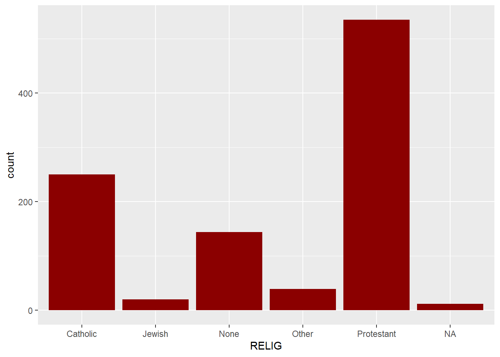
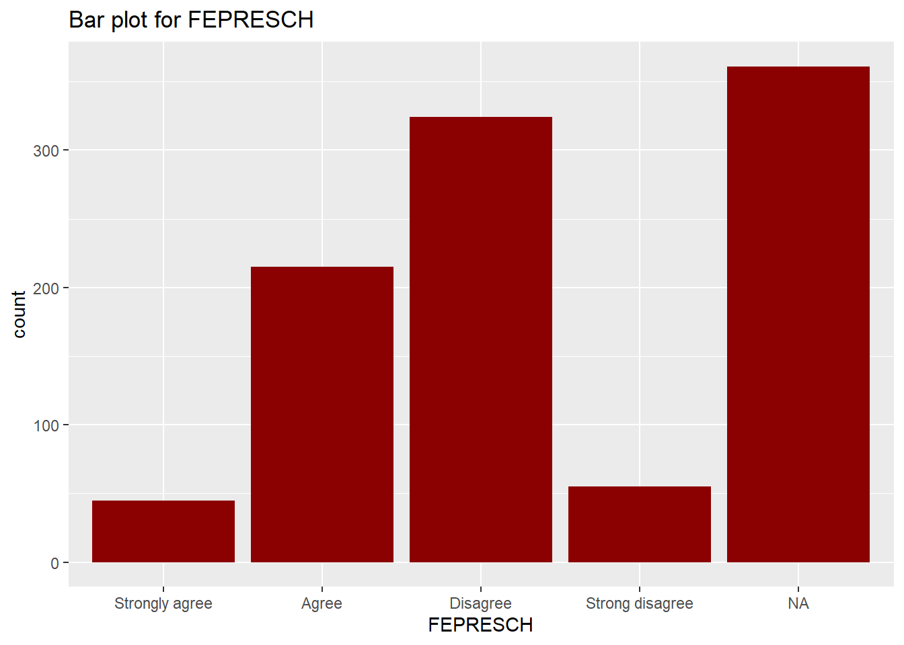
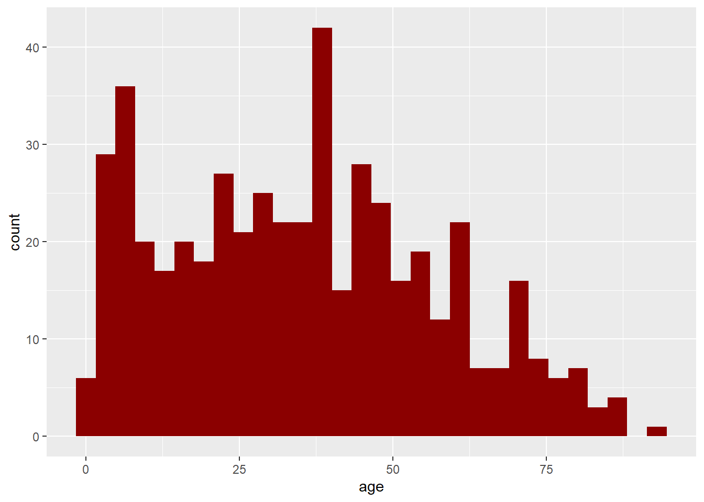
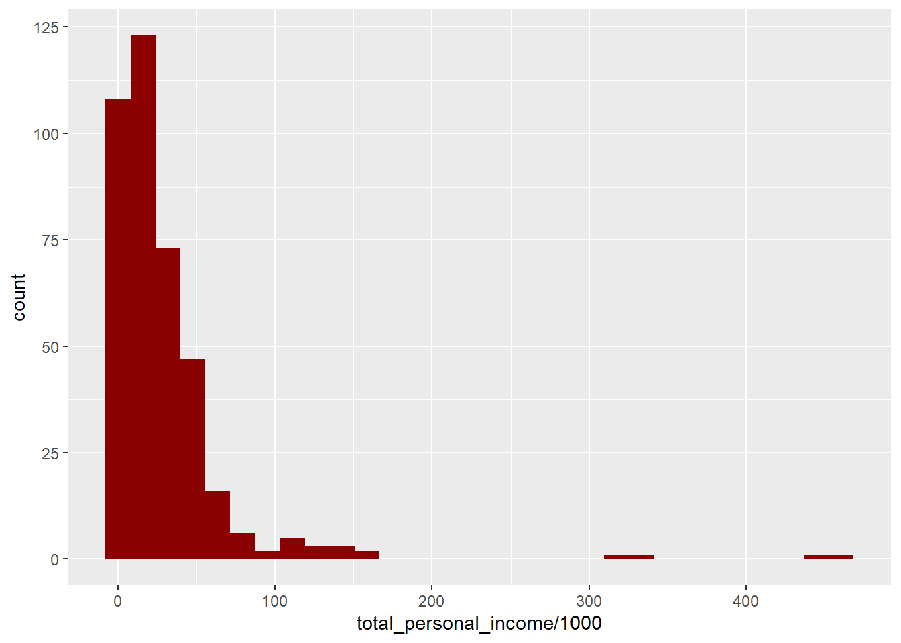

THIS VERSION OF THE ASSIGNMENT IS WITH COMPLETE GRAPHS AND TABLES
You still have to provide your written answers to the assignment questions Load Libraries:
library(dplyr) # for manipulating data
library(ggplot2) # for making graphs
library(knitr) # for nicer table formatting
library(summarytools) # for frequency distribution tablesSet your working directory, where the folder “Datasets” is located:
setwd(".") # for example: setwd(""C:/Users/George/Dropbox/GSU/4041_Spring2020/R"")Load the gss98 data set from the file “Datasets/gss98.RData” into R using load(file = "Datasets/gss98.RData") command. Before you run the command, make sure you have set the working directory correctly (folder “Datasets” should be in your working directory).
load(file = "Datasets/gss98.RData")RELIGGenerate a frequency distribution for RELIG using summarytools::freq(gss98$RELIG) command:
freq(gss98$RELIG)## Frequencies
##
## Freq % Valid % Valid Cum. % Total % Total Cum.
## ---------------- ------ --------- -------------- --------- --------------
## Catholic 250 25.30 25.30 25.00 25.00
## Jewish 20 2.02 27.33 2.00 27.00
## None 144 14.57 41.90 14.40 41.40
## Other 39 3.95 45.85 3.90 45.30
## Protestant 535 54.15 100.00 53.50 98.80
## <NA> 12 1.20 100.00
## Total 1000 100.00 100.00 100.00 100.00Generate a bar chart for RELIG using gss98 %>% ggplot() + geom_bar( aes(x = RELIG), fill = "darkred" ) (pick your own color for the chart):
gss98 %>% ggplot() + geom_bar( aes(x = RELIG), fill = "darkred" )
QUESTIONS:
A. How many people in this data set are Protestants? Catholics? Jews?
Replace this comment with your answers (make sure the text remains indented)B. What percentage of all respondents have no religion? What proportion have no religion? How were both numbers calculated?
Replace this comment with your answers (make sure the text remains indented)C. What advantage(s) and disadvantage(s) do you see to presenting a bar chart in place of a frequency table?
Replace this comment with your answers (make sure the text remains indented)FEPRESCHGenerate a frequency distribution for FEPRESCH using freq(DATASET_NAME$VARIABLE_NAME) command:
# replace this commment with your code freq(gss98$FEPRESCH, round.digits = 1)## Frequencies
##
## Freq % Valid % Valid Cum. % Total % Total Cum.
## --------------------- ------ --------- -------------- --------- --------------
## Strongly agree 45 7.0 7.0 4.5 4.5
## Agree 215 33.6 40.7 21.5 26.0
## Disagree 324 50.7 91.4 32.4 58.4
## Strong disagree 55 8.6 100.0 5.5 63.9
## <NA> 361 36.1 100.0
## Total 1000 100.0 100.0 100.0 100.0Generate a histogram for FEPRESCH:
# replace this commment with your code ggplot(data = gss98) + geom_bar( aes(x = FEPRESCH), fill = "darkred" ) + labs(title = "Bar plot for FEPRESCH")
QUESTIONS:
A. Use the the codebook for the survey to find the exact question wording for the variable FEPRESCH. Copy it into your answer (You can cut and paste.)
Replace this comment with your answers (make sure the text remains indented)B. How many people in this data set strongly agree with this statement? What percentage of all respondents strongly agree with this statement?
Replace this comment with your answers (make sure the text remains indented)C. What percentage of the respondents who gave valid responses strongly agree with this statement? How was this number calculated? Why is this answer different from that in question 3B? Which percentage is most meaningful in this case - the “percent” or the “valid percent”? Why?
Replace this comment with your answers (make sure the text remains indented)D. How many missing cases are there?
Replace this comment with your answers (make sure the text remains indented)E. What does the 40.7 in the “Cum Percent” column mean? What is the absolute frequency who agreed or strongly agreed? What percentage disagreed or strongly disagreed? What is the absolute frequency who disagreed or strongly disagreed? (Show your work.)
Replace this comment with your answers (make sure the text remains indented)F. Interpret the bar plot for the variable FEPRESCH. Why did I ask you to plot a bar chart and not a histogram for this variable?
Replace this comment with your answers (make sure the text remains indented)QUESTION:
A. Are relig and fepresch nominal level, ordinal level, or interval level variables? How do you know? Write the names of at least two more of each type of variable in the data set.
Replace this comment with your answers (make sure the text remains indented)Have R produce frequency distributions for several variables having to do with confidence in U.S. institutions: CONCLERG, CONEDUC, CONFED, CONJUDGE, CONLEGIS, and CONPRESS.
# replace this commment with your code freq(gss98$CONCLERG) ## Frequencies
##
## Freq % Valid % Valid Cum. % Total % Total Cum.
## ---------------------- ------ --------- -------------- --------- --------------
## great confidence 196 29.74 29.74 19.60 19.60
## some confidence 335 50.83 80.58 33.50 53.10
## Hardly confidnce 128 19.42 100.00 12.80 65.90
## <NA> 341 34.10 100.00
## Total 1000 100.00 100.00 100.00 100.00freq(gss98$CONEDUC)## Frequencies
##
## Freq % Valid % Valid Cum. % Total % Total Cum.
## ---------------------- ------ --------- -------------- --------- --------------
## great confidence 193 28.59 28.59 19.30 19.30
## some confidence 381 56.44 85.04 38.10 57.40
## Hardly confidnce 101 14.96 100.00 10.10 67.50
## <NA> 325 32.50 100.00
## Total 1000 100.00 100.00 100.00 100.00freq(gss98$CONFED)## Frequencies
##
## Freq % Valid % Valid Cum. % Total % Total Cum.
## ---------------------- ------ --------- -------------- --------- --------------
## great confidence 103 15.61 15.61 10.30 10.30
## some confidence 323 48.94 64.55 32.30 42.60
## Hardly confidnce 234 35.45 100.00 23.40 66.00
## <NA> 340 34.00 100.00
## Total 1000 100.00 100.00 100.00 100.00freq(gss98$CONJUDGE)## Frequencies
##
## Freq % Valid % Valid Cum. % Total % Total Cum.
## ---------------------- ------ --------- -------------- --------- --------------
## great confidence 216 33.38 33.38 21.60 21.60
## some confidence 347 53.63 87.02 34.70 56.30
## Hardly confidnce 84 12.98 100.00 8.40 64.70
## <NA> 353 35.30 100.00
## Total 1000 100.00 100.00 100.00 100.00freq(gss98$CONLEGIS)## Frequencies
##
## Freq % Valid % Valid Cum. % Total % Total Cum.
## ---------------------- ------ --------- -------------- --------- --------------
## great confidence 67 10.18 10.18 6.70 6.70
## some confidence 386 58.66 68.84 38.60 45.30
## Hardly confidnce 205 31.16 100.00 20.50 65.80
## <NA> 342 34.20 100.00
## Total 1000 100.00 100.00 100.00 100.00freq(gss98$CONPRESS)## Frequencies
##
## Freq % Valid % Valid Cum. % Total % Total Cum.
## ---------------------- ------ --------- -------------- --------- --------------
## great confidence 59 8.85 8.85 5.90 5.90
## some confidence 341 51.12 59.97 34.10 40.00
## Hardly confidnce 267 40.03 100.00 26.70 66.70
## <NA> 333 33.30 100.00
## Total 1000 100.00 100.00 100.00 100.00QUESTIONS:
A. Use the codebook for the survey to find the exact question wording for each variable, Type your answer below:
[VAR: CONCLERG] --
[VAR: CONEDUC] --
[VAR: CONFED] --
[VAR: CONJUDGE] --
[VAR: CONLEGIS] --
[VAR: CONPRESS] -- B. The following commands extract second column from each frequency table above (% valid) to construct a table comparing confidence in the six institutions. Rank order the six institutions from the one that Americans have the most confidence in to the one they have the least confidence in. Does it make any difference whether you rank order the institutions by the “great confidence” or the “hardly any confidence” percentages?
data.frame( "CONCLERG" = freq(gss98$CONCLERG)[,2],
"CONEDUC" = freq(gss98$CONEDUC)[,2],
"CONFED" = freq(gss98$CONFED)[,2],
"CONJUDGE" = freq(gss98$CONJUDGE)[,2],
"CONLEGIS" = freq(gss98$CONLEGIS)[,2],
"CONPRESS" = freq(gss98$CONPRESS)[,2] ) %>% kable(digits = 1, caption = "Percent (%) Valid Responses")| CONCLERG | CONEDUC | CONFED | CONJUDGE | CONLEGIS | CONPRESS | |
|---|---|---|---|---|---|---|
| great confidence | 29.7 | 28.6 | 15.6 | 33.4 | 10.2 | 8.8 |
| some confidence | 50.8 | 56.4 | 48.9 | 53.6 | 58.7 | 51.1 |
| Hardly confidnce | 19.4 | 15.0 | 35.5 | 13.0 | 31.2 | 40.0 |
| NA | NA | NA | NA | NA | NA | |
| Total | 100.0 | 100.0 | 100.0 | 100.0 | 100.0 | 100.0 |
Replace this comment with your answer (make sure the text remains indented)C. Write a short paragraph describing what you learn from the table. How much confidence do Americans seem to have in these institutions? Where do they place the greatest confidence? Use some percentages in your paragraph to make your points more explicit.
Replace this comment with your answer (make sure the text remains indented)
Now, load a random sample of 500 observations from the 2000 U.S. Census Data from the file “Datasets/loan50.csv” into R using read.csv("Datasets/census.csv") coomand. Name the object census:
census <- read.csv("Datasets/census.csv")See the names and types of the variables in the dataset using names() and str() commands:
names(census)## [1] "census_year" "state_fips_code" "total_family_income"
## [4] "age" "sex" "race_general"
## [7] "marital_status" "total_personal_income"str(census)## 'data.frame': 500 obs. of 8 variables:
## $ census_year : int 2000 2000 2000 2000 2000 2000 2000 2000 2000 2000 ...
## $ state_fips_code : Factor w/ 47 levels "Alabama","Arizona",..: 9 9 9 9 9 9 9 9 9 9 ...
## $ total_family_income : int 14550 22800 0 23000 48000 74000 23000 74000 60000 14600 ...
## $ age : int 44 20 20 6 55 43 60 47 54 58 ...
## $ sex : Factor w/ 2 levels "Female","Male": 2 1 2 1 2 1 1 1 1 1 ...
## $ race_general : Factor w/ 8 levels "American Indian or Alaska Native",..: 7 8 2 8 8 8 8 8 2 8 ...
## $ marital_status : Factor w/ 6 levels "Divorced","Married/spouse absent",..: 3 4 4 4 3 3 3 3 3 6 ...
## $ total_personal_income: int 0 13000 20000 NA 36000 27000 11800 48000 40000 14600 ...Describe the following variables, their types (levels of measurement), and appropriate type of frequency distribution graph:
[VAR: marital_status] --
[VAR: sex] --
[VAR: age] --
[VAR: total_personal_income] -- Graph the frequency distribution for age:
census %>% ggplot(mapping = aes(x = age)) + geom_histogram( fill = "darkred" )
Describe the distribution:
Replace this comment with your answer (make sure the text remains indented)Graph the frequency distribution for total_personal_income using x = total_personal_income/1000 in ggplot command:
census %>% ggplot(mapping = aes(x = total_personal_income/1000)) + geom_histogram( fill = "darkred" ) 
Describe the distribution:
Replace this comment with your answer (make sure the text remains indented)Save your RMarkdown file, Knit an html report, and publish it on RPubs or save as a pdf file. Submit the link to the html or your pdf in the Homework 1 dropbox on iCollege